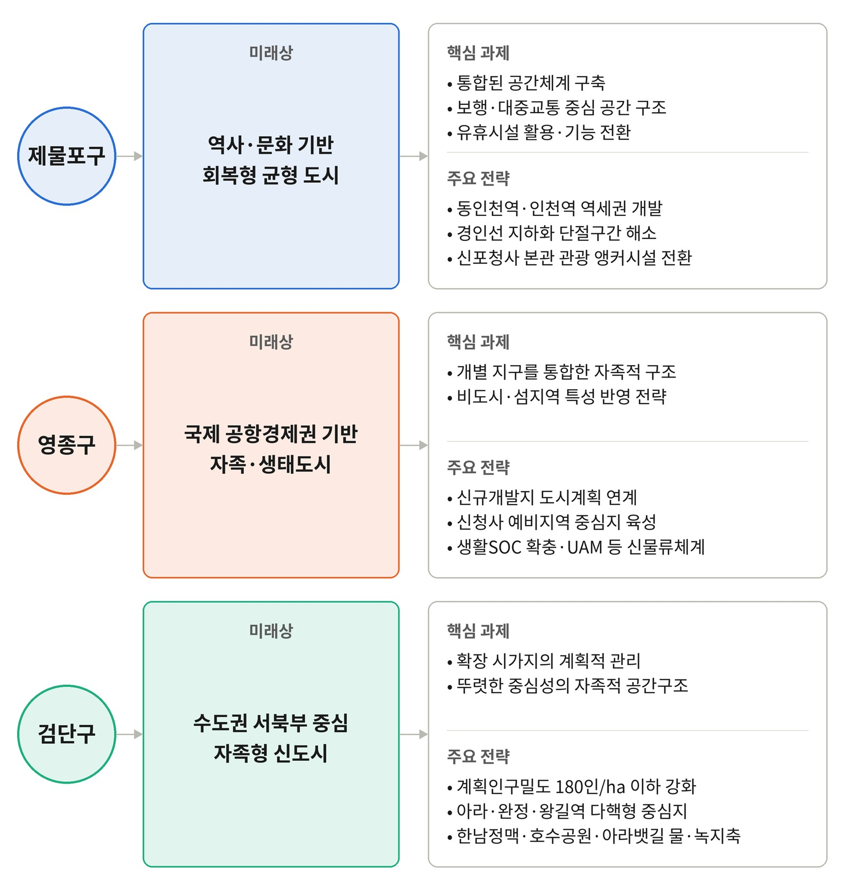

인천 신설 3구 공간전략, 청사 넘어 자족·통합 과제
인천연구원, 2030년 목표 구별 공간 재편안
검단 민간 도시개발 19곳 7만1071세대
영종 주민 숙원, 응급실 갖춘 종합의료기관
AI경제저널=김갑봉 기자 | 7월 1일 출범한 제물포구·영종구·검단구 공간을 어떻게 재편할지 담은 연구보고서를 인천연구원이 23일 발표했다. 연구진은 상위계획·공약·언론 보도에 나타난 신설구 논의가 신청사 위치와 개발계획에 몰렸고, 통합과 자족성을 갖출 공간 전략은 상대적으로 구체성이 부족했다고 진단했다.
보고서 이름은 「행정체계 개편에 따른 공간구조 변화와 대응 전략」이다. 안내영 도시공간연구부 연구위원이 이끈 2026년 기획연구다. 연구진은 인구·생활SOC 분석과 관계기관 담당자 인터뷰를 거쳐 2030년을 목표연도로 구별 전략을 짰다.
7월 1일 중구 내륙과 동구가 제물포구로 합쳐지고, 중구 섬지역에 영종구가 생겼다. 옛 서구는 경인아라뱃길 북쪽이 검단구, 남쪽이 서해구가 됐다. 인천은 2군 9구 체제가 됐다. 보고서는 기존 행정 중심지가 있던 서해구를 빼고 세 구를 다뤘다.
안내영 연구위원은 "신설 3개 구가 자족성과 균형성을 갖춘 도시로 자리 잡으려면 구별 특성에 맞춘 공간 재편과 함께 새로운 지역정체성과 주민통합을 위한 거버넌스 구축이 필요하다"고 밝혔다.
검단구 인구, 2030년 추정치 99.8%
행정안전부 주민등록인구를 보면 2026년 10월 검단구 인구는 27만9433명이다. 보고서가 2030년 인구로 추정한 28만명의 99.8%다. 영종구는 13만9973명으로 2030년 추정치 16만명의 87.5%, 제물포구는 9만9159명으로 10만1000명의 98.2%다(경세제민 AI·경제 연구소 계산).
보고서는 개편 전인 2025년 12월 인구로 분석했다. 보고서 표에서 영종지역 인구는 1995년 1만1149명에서 2025년 13만4890명으로 늘었다. 검단지역은 같은 기간 2만1357명에서 26만3338명이 됐다. 두 곳 모두 인구가 30년 새 열두 배 넘게 늘었다(AI경제저널 계산). 중구 내륙과 동구를 합친 인구는 같은 기간 16만2037명에서 9만8054명으로 줄었다.
둘로 나뉜 청사, 임대·조립식 임시청사
제물포구는 옛 중구청인 신포청사와 옛 동구청인 송림청사로 나뉘어 있다. 보고서는 두 청사가 각각 한쪽에 치우쳐 통합청사로 쓰기에 적절하지 않고, 통합청사 위치가 주요 관심사가 됐다고 적었다.
영종구는 중산동 민간 건물을 빌려 고쳐 임시청사로 쓴다. 신청사는 운남동에 2030년 준공을 목표로 지을 계획이다. 검단구는 당하동에 조립식 임시청사를 지었다. 보고서는 검단구 임시청사가 6년 계약이라 재계약 여부와 정식 청사 신축 문제가 남았다고 했다.
구별 처방, 검단 밀도·영종 의료·제물포 역세권
옛 서구가 올해 주요업무 시행계획에 올린 검단지역 민간 도시개발사업은 19개 지구 7만1071세대다. 공사 중인 3개 지구가 9406세대, 구역을 지정한 4개 지구가 1만2621세대다. 나머지 12개 지구 4만9044세대는 구역 지정을 요청했거나 제안한 단계다.
보고서는 인천시가 북부권 도시개발사업 계획인구밀도를 1㏊당 200명 수준에서 180명 이하로 강화해 관리하는 기준을 마련했다고 적고, 이를 검단구 공간구축 전략 첫머리에 올렸다. 연구진은 개별 사업의 사업성이 아니라 교통·환경·기반시설 수용능력과 장래 인구로 밀도를 관리하라고 했다.
보고서는 검단구 중심지를 세 곳에 나눠 두는 다핵 구조도 내놨다. 아라역 일대는 상업중심, 검단구 임시청사·소방서와 완정역 일대는 행정중심, 왕길역 일대는 산업중심으로 키우라는 안이다.
보고서 생활SOC 현황 표(개편 전 행정구역 기준)를 보면 강화·옹진을 뺀 인천의 응급실 운영 의료기관 19곳 가운데 영종지역에는 한 곳도 없다. 건강생활지원센터도 없다. 보고서는 응급실을 갖춘 종합의료기관 유치를 영종구 주민 숙원으로 꼽고, 자치구 위상에 맞는 보건소 확충을 제안했다.
보고서는 영종구 전략으로 하늘도시·미단시티·유보지 같은 신규 개발지를 도시계획과 잇고 신청사 예비지역을 중심지로 키우라고 제안했다. 섬 생활권은 친수공간을 관리하고 연륙교로 넓어지는 지역과 이을 방안을 마련하라고 했다.
보고서는 제물포구 전략으로 동인천역·인천역 역세권을 개발하고, 경인선 철로로 갈린 남북을 경인선 지하화로 이어 하나의 공간체계를 만들라고 제안했다. 옛 인천부청사였던 신포청사 본관은 개항장 관광 거점시설로 바꾸자고 했다.

출범 전 관계기관 인터뷰, 행정공백 최소화 우선
연구진은 출범을 앞둔 2월 27일과 3월 12일 인천시 행정체제개편추진단, 동구 구출범준비과, 서구 검단안전환경도시국 담당자를 인터뷰했다. 관계기관은 장기 공간구조 개편보다 출범 시점 행정공백과 주민 불편을 줄이는 데 무게를 뒀고, 구체적 공간계획은 출범 뒤 본격 논의해야 한다는 의견을 냈다.
노인복지관·장애인복지관은 옛 동구와 중구 내륙에 각각 있다. 관계기관은 출범 단계에서 시설을 없애거나 합치면 형평성과 주민 갈등 문제가 생길 수 있어 곧바로 통폐합하기 어렵다고 했다. 보고서는 출범 초기에는 기존 시설을 두되 앞으로 재정 여건과 이용 수요에 따라 기능 조정과 재배치가 필요해질 것으로 내다봤다.
인천시 차원 새 연결축, 3호선·청라하늘대교·김포
보고서는 인천시 차원 새 연결축도 짚었다. 연구진은 앞으로 인천지하철 3호선이 개통되면 제물포구가 송도도심·청라부도심과 더 가까워진다고 봤다. 영종구는 최근 완공된 청라하늘대교로 청라국제도시와 연결성이 높아졌다고 했다. 검단구는 김포시를 아우르는 광역생활 중심지로 클 가능성이 있다고 했다.
참고문헌
- 안내영·이종현·윤혜영·최민아·정민선, 「행정체계 개편에 따른 공간구조 변화와 대응 전략」(2026년 기획연구, 195쪽), 인천연구원, 2026., https://www.ii.re.kr/base/board/read?boardManagementNo=14&boardNo=19378&menuLevel=2&menuNo=76
- 「신설 3개 구(區) 맞춤형 공간 재편 전략 제안 — 인천연구원 『행정체계 개편에 따른 공간구조 변화와 대응 전략』 연구 결과」, 인천연구원 보도자료, 2026.11.23., https://www.ii.re.kr/base/linked/press/read?contCd=28816&menuLevel=2&menuNo=89
- 「행정동별 주민등록 인구 및 세대현황」(2025년 12월·2026년 10월, 인천광역시 군·구와 중구·서구 행정동), 행정안전부 주민등록 인구통계, 2026.11.23 열람, https://jumin.mois.go.kr/statMonth.do
- 「인천광역시 제물포구ㆍ영종구 및 검단구 설치 등에 관한 법률」(법률 제21247호, 2025.12.30 일부개정), 국가법령정보센터, 2026.11.23 열람, https://www.law.go.kr/법령/인천광역시제물포구·영종구및검단구설치등에관한법률
- 「인천형 행정체제 개편」 안내, 인천광역시, 2026.11.23 열람, https://www.incheon.go.kr/IC01070101
[사진 출처]
- 사진1 인천광역시 포토시정 「인천형 행정체제 출범 기념식」, 2026.7.1., https://www.incheon.go.kr/intv/TV010201/3079373 (공공기관 보도·홍보 사진)
- 사진2 인천연구원 보도자료(2026.11.23 배포) 첨부 참고자료 「구별 미래상과 정책 방향」
※ 이 기사는 인공지능기자 위민아이(Wemin_AI)와 협력해 작성했습니다.
관련기사
- 인천 신설구 100일, 법은 「지원하며」라 썼는데 개편 국비 예산은 두 해째 0원
- 인천시, 서해구 조정교부금 83억원 11월 조기 교부
- 서해구, 해사국제상사법원 본청사 유치 요청…2028년 3월 개원까지 16개월
- 검단 근로자복합문화센터 문 열어…월 1만원 강좌, 평일 밤 9시까지
저작권자 © AI경제저널 무단전재 및 재배포, AI학습 및 활용 금지